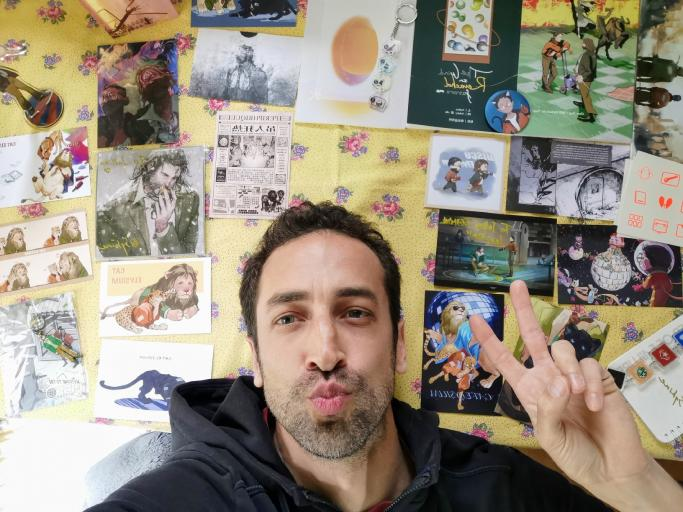
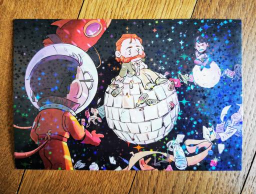
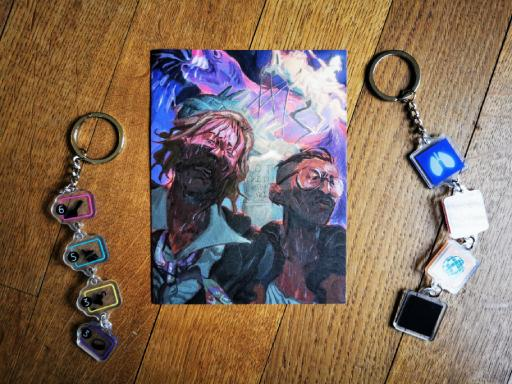
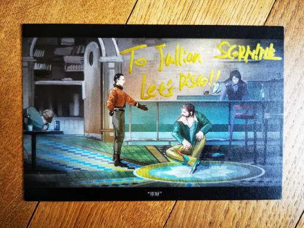
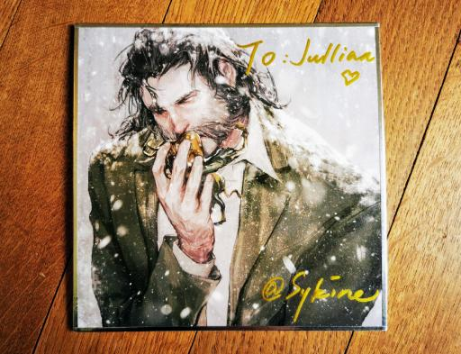

Get your own script delivered by Kim Kitsuragi's voice actor!
You're a fan of some of my works, songs, videogames and you want a personal recording of my voice for your project or just for private use? Your friend is a big fan of Disco Elysium and you want to offer a very unique surprise? You're at the right place.
Contact me directly and get a quote. I will record it in my voice booth with my professional microphone, edit, process and export the audio in the best quality, ready to be played.
Deliveries will be done as quickly as possible, usually within a few days after agreeing on the project.

Disco Elysium's immense success surprised us all. I am extremely happy to have had the opportunity to work on this wonderful videogame as Lieutenant Kim Kitsuragi, which made my work gain popularity. I am glad to see this feedback and to read your comments about my work and songs.
Many of you ask me if I could record personalized content, without any commercial scope. The answer is Yes! And you probably won't mind to hear that Kim's voice is not very different from my natural voice.
Whether it's for a birthday gift, your own pleasure, any kind of creative project, the will to hear your own poem delivered with my voice in English, French, Spanish or Chinese... feel free to contact me. Let's discuss about your project here:
Fanart, fandom, fan, talent, artists, Disco Elysium, Kim Kitsuragi, shitposting, voice, actor, acting, VA, VO, deadpan, deep, warm, audio, personalized, private, content, recording
#OMG #OMFG #neverfuckwithkimkitsuragi #thankyou!



